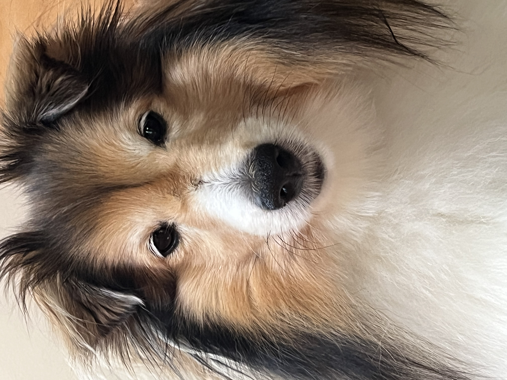

My dog's furry face, taken very close to her. The camera is focused on her nose, and her whole snout appears prominent and bulbous. Her face seems narrow and sloped.

My dog's furry face (slightly sleepier), taken further away and zoomed in. Her snout appears wedge-like and truer to life. She sat still under the promise of snacky things.
Part 2: Architectural Perspective Compression
De Anza College, taken from a distance and zoomed in. De Anza College, taken closer without zoom. The far tower appears much further away.
Part 3: The Dolly Zoom
Dolly zoom at a church, at night. Focused on the light source and the pillar reflecting the light. Gif is comprised of 16 still images.